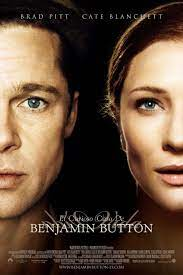

Benjamin Button nace como un anciano en el Nueva Orleans de 1918 y según pasa el tiempo va rejuveneciendo, justo al revés que el resto de los mortales. Durante este proceso, el amor y la muerte formarán parte esencial de su vida.

$11
La forma del agua
Baltimore, años 60. Elisa, muda desde que era un bebé, trabaja como limpiadora nocturna en un centro de investigación aeroespacial. Una noche, mientras está limpiando en un zona de alta seguridad, ve cómo llevan al laboratorio una cápsula con un extraño ser en su interior. Se trata de un hombre anfibio que despertará la curiosidad de Elisa.
$8
Trece vidas
5000 personas, 17 países, 1 milagro que unió al mundo. Un relato basado en la historia real que conmovió al mundo del rescate de un equipo de fútbol de la cueva de Tham Luang, en Tailandia, tras quedar atrapado por las lluvias torrenciales y peligrosas inundaciones.